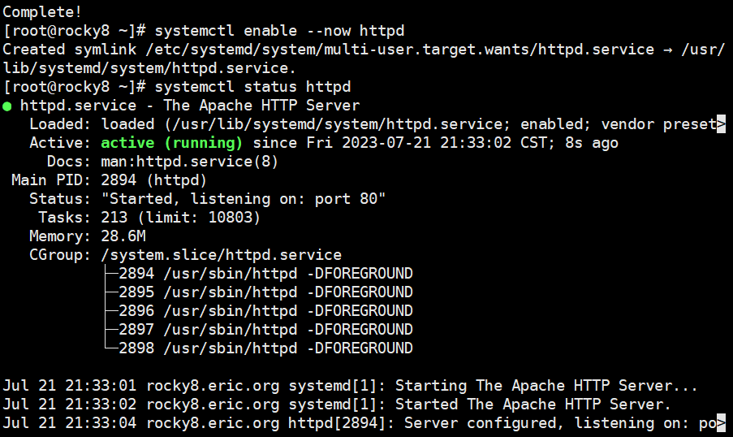
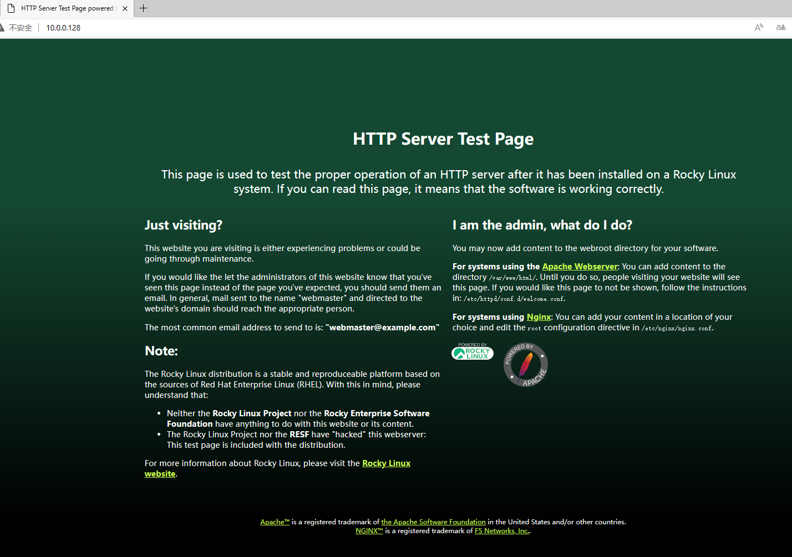
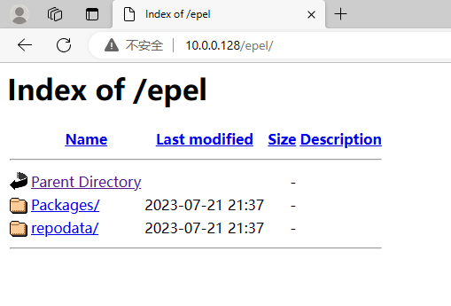
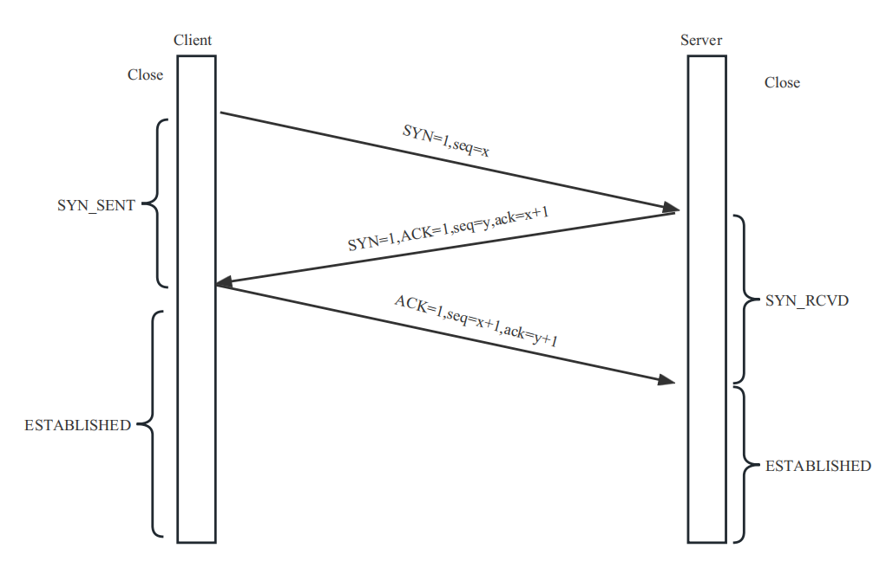
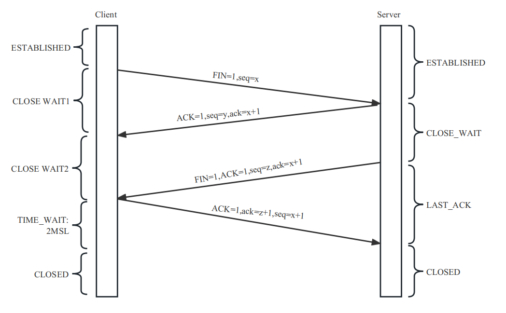

一、 yum私有仓库的实现
1. 初始化环境
关闭SELinux
| sed -i '/^SELINUX=/c SELINUX=disabled' /etc/selinux/config
|
关闭防火墙
1
| systemctl disable --now firewalld
|
2. 配置yum仓库服务器yum源
1
| vim /etc/yum.repos.d/test.repo
|
1
2
3
4
5
6
7
8
9
10
11
12
13
14
15
16
17
18
19
20
21
22
| [BaseOS]
name=BaseOS
baseurl=file:///misc/cd/BaseOS
gpgchck=1
gpgkey=file:///etc/pki/rpm-gpg/RPM-GPG-KEY-rockyofficial
[AppStream]
name=AppStream
baseurl=file:///misc/cd/AppStream
gpgcheck=1
gpgkey=file:///etc/pki/rpm-gpg/RPM-GPG-KEY-rockyofficial
[epel]
name=epel
baseurl=https://mirrors.aliyun.com/epel/8/Everything/x86_64
pgpcheck=1
pgkey=https://mirrors.aliyun.com/epel/RPM-GPG-KEY-EPEL-8
[extras]
name=extras
baseurl=https://mirrors.aliyun.com/centos/$releasever/extras/$basearch/os
gpgcheck=0
|
3. 安装Apache HTTP
1
2
3
| yum install -y httpd
systemctl enable --now httpd
systemctl status httpd
|


4. 从阿里云镜像下载epel源，制作私有yum仓库
1
| dnf reposync --repoid=epel --download-metadata -p /var/www/html/
|

5. 配置客户端epel源的baseurl
1
2
3
4
5
| [epel]
name=EPEL
baseurl=http://10.0.0.128/epel/
gpgcheck=0
enabled=1
|
二、 《图解TCP/IP》
地址：https://leon-wtf.github.io/doc/%E5%9B%BE%E8%A7%A3TCPIP.pdf
三、 画图 TCP协议和三次握手及四次挥手


四、 静态配置网卡IP
1. CentOS
1
| vim /etc/sysconfig/network-scripts/ifcfg-ens160
|
1
2
3
4
5
6
| BOOTPROTO=static
IPADDR=10.0.0.128
PREFIX=24
NAME=eth0
DEVICE=eth0
ONBOOT=yes
|
2. Ubuntu
1
| vim /etc/netplan/00-installer-config.yaml
|
1
2
3
4
5
6
7
8
9
10
11
12
13
14
15
| network:
ethernets:
ens33:
dhcp4: no
dhcp6: no
addresses:
- 10.0.0.16/22
routes:
- to: default
via: 10.0.16.1
nameservers:
addresses:
- 114.114.114.114
- 8.8.8.8
version: 2
|
保存退出后重新加载配置文件
五、 实现免密登陆脚本, expect登陆远程主机，将生成的密钥写入到目标主机, expect测试远程登陆。
1）通过shift读取脚本参数
2）通过select来选择功能.例如功能有
当前我们只实现免密钥登陆主机
3）通过函数封装每个功能
4）将免密钥登陆的过程可以重复进行, while 循环实现重复，需要有退出过程。当用户输入exit时，退出免密钥功能。
5）支持输入一批主机免密钥，使用数组 实现
实现
1
2
3
4
5
6
7
8
9
10
11
12
13
14
15
16
17
18
19
20
21
22
23
24
25
26
27
28
29
30
31
32
33
34
35
36
37
38
39
40
41
42
43
44
45
46
47
48
49
50
51
52
53
54
| #!/bin/bash
ssh_host() {
NET=10.0.0
user=root
password=123456
for id in {5..6} ;do
ip=$NET.$id
expect <<EOF
set timeout 5
spawn ssh $user@$ip
expect {
"yes/no" { send "yes\n";exp_continue }
"password" { send "$password\n" }
}
expect eof
EOF
done
}
install_mysql(){
yum install -y mysql
}
install_apache(){
yum install -y httpd
}
menu() {
while true;do
PS3="请输入指令（1-4）："
select MENU in 安装mysql 安装apache 免密登录远程主机 退出脚本;do
case $REPLY in
1)
install_mysql
break
;;
2)
install_apache
break
;;
3)
ssh_host
break
;;
4)
echo 退出!
exit
;;
esac
done
done
}
menu
|
shell脚本参考：
https://blog.csdn.net/weixin_44236346/article/details/126635414